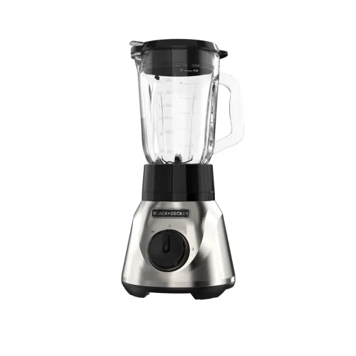
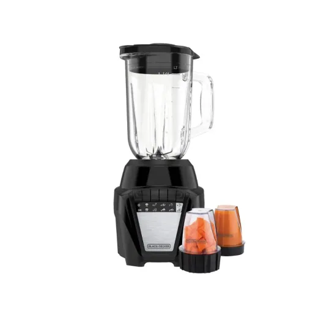
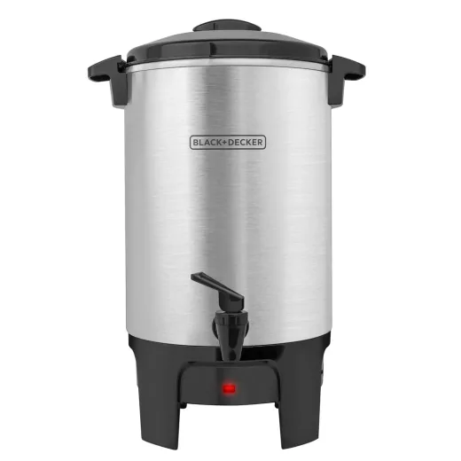
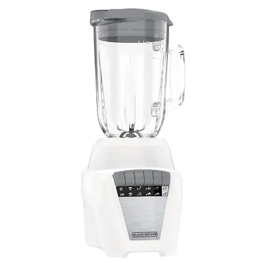
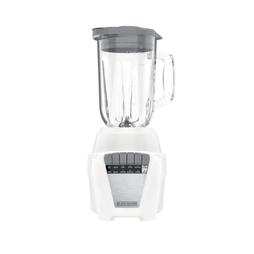
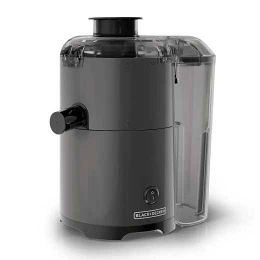
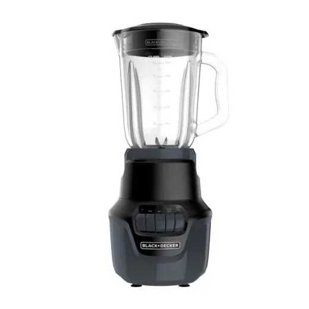
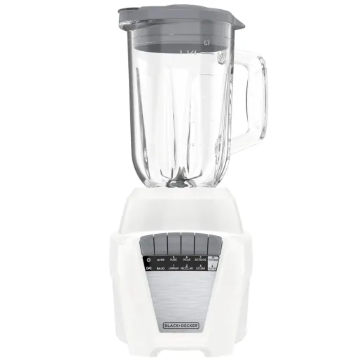
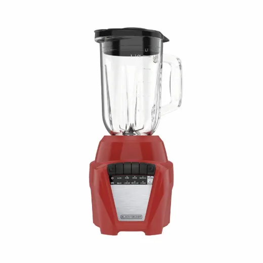

Inicio › Licuadoras y cafeteras

Black+Decker · Modelo BL16860SDLA
Licuadora Black+Decker Tricuadora
L 1,490
Más barato en Diunsa · ahorras hasta L 635 frente a la tienda más cara
Precio en cada tienda
| Tienda | Precio | Antes | Disponibilidad | |
|---|---|---|---|---|
| Diunsa | L 1,490 | Disponible | Ver en tienda › | |
| Gallo más Gallo | L 1,795 | — | Disponible | Ver en tienda › |
| La Curacao | L 1,957 | Disponible | Ver en tienda › | |
| Walmart | L 2,125 | — | Disponible | Ver en tienda › |
Precios referenciales tomados de cada tienda el 28 de noviembre de 2026. El precio válido es el que muestra la tienda al comprar.
Historial de precio
Lo seguimos desde el 1 de noviembre. Precio más bajo registrado: L 1,490 en Diunsa (25 de noviembre), igual que hoy. Cambios de precio registrados: 3.
Características
| Color | Surtido |
|---|---|
| Marca | Black & Decker |
| Medida de altura | 30 cm |
| Medida de ancho | 40 cm |
| Medida de profundidad | 35 cm |
| Modelo o serie del producto | BL0877 1BDLA |
| Velocidad del procesador | 2 velocidades |
| Capacidad | 1.5L |
| Diseño | Liso |
| Uso recomendado | Es ideal para uso doméstico |
| Voltaje | 120V |
| Watts de potencia | 702 W |
| Cantidad de velocidades | 2 velocidades |
| Fabricante | Black & Decker |
Descripción
Licuadora de Vidrio Black & Decker BL16860SDLA 2 Velocidades Diseño resistente con acople de metal El sistema duradero con acople metálico garantiza una mayor vida útil, ideal para quienes buscás un electrodoméstico que aguante el ritmo del día a día. Base de acero inoxidable: firmeza y estilo Contá con una base robusta y moderna que le da estabilidad a la licuadora mientras preparás tus recetas favoritas. Potencia que se siente: 800 watts Con 800 watts de fuerza, licuá desde frutas hasta hielo sin esfuerzo y en menos tiempo. Resultados rápidos y consistentes. Cuchillas más grandes, mejores resultados Las cuchillas son un 70% más grandes, lo que permite un mejor triturado y mezclado, para que tus batidos queden perfectos en cada uso. Protección inteligente con Inteli-Fuse Este sistema protege el motor del sobrecalentamiento y alarga la vida útil de tu licuadora. Seguridad y durabilidad e
Otros licuadoras y cafeteras Black+Decker

Licuadora Black + Decker 1.25 Litros Negro BL0876-4BDLAL 1,547En La Curacao
Percoladora de café Black & Decker de 30 TazasL 1,575En Walmart
Black a Decker Licuadora Vidr 8ve 2vasoL 1,399En Walmart
Licuadora Ice Crush Black & Decker 8 velocidadesL 1,399En Walmart
Extractor de Jugo Black and Decker de 400WL 1,399En Walmart
Licuadora 4 VelocidadesL 1,395En Lady Lee
Licuadora de Vidrio Black & Decker BL08761WDLA 8 VelocidadesL 1,395En Gallo más Gallo
Licuadora Black+Decker Ice Crush Roja 1.25LL 1,390.01En Diunsa